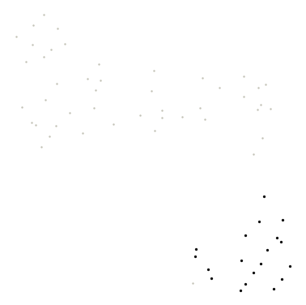
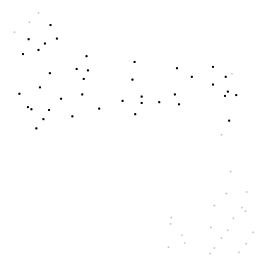

Urinary
Urinary genomes (Wolfe Lab urinary bacterial isolate genomes (UMB)) shown two ways: by their DNA sequence (DNABERT-S embeddings) and by their gene content (eggNOG gene families), each with its own clusters.
DNA-embedding map (DNABERT-S)
Genomes are placed by DNABERT-S embeddings of their DNA sequence, so genomes with similar sequence composition sit close together. Treat it as a visual impression of genetic similarity, not a measure of evolutionary distance.
Hover a point for its details. Click a legend entry to hide it; double-click to show only that entry (double-click again to show all). Drag to zoom; double-click the plot to reset. Grey points are outliers that HDBSCAN did not assign to any cluster. Open full screen.
Clusters varied between random runs; treat cluster assignments with caution. Across 5 runs with different random seeds, the map gave 2-5 clusters (mean agreement 0.50, lowest 0.12; Adjusted Rand Index).
| Cluster | Genomes |
|---|---|
| Cluster 0 | 9 |
| Cluster 1 | 11 |
| Cluster 2 | 6 |
| Cluster 3 | 4 |
| Outliers | 35 |
Functional map (eggNOG gene families)
Here genomes are placed by what their genes do. Each genome is described by the relative abundance of 4,000 eggNOG gene families (each family's share of the genome's genes), and genomes with similar profiles (Bray–Curtis dissimilarity) sit close together.
Hover a point for its details. Click a legend entry to hide it; double-click to show only that entry (double-click again to show all). Drag to zoom; double-click the plot to reset. Grey points are outliers that HDBSCAN did not assign to any cluster. Open full screen.
Clusters were mostly consistent across random runs; boundaries may shift slightly. Across 5 runs with different random seeds, the map gave 2-3 clusters (mean agreement 0.85, lowest 0.62; Adjusted Rand Index). Agreement between these functional clusters and the DNA-embedding clusters: Adjusted Rand Index 0.37 (1 = identical groupings, 0 = unrelated), computed on the 45% of genomes that are in a cluster on both maps.
Top 10 COG gene families in each functional cluster
How they are chosen. Enrichment is the mean relative abundance of a COG family in the cluster's genomes divided by its mean in all other clustered genomes of this view. Only families present in at least 10% of the cluster's genomes are ranked, so one-off genes can't top the list. "In this cluster" is the share of the cluster's genomes carrying the family. The ranking is descriptive; no per-cluster test is applied. 6 outlier genomes are excluded. The top 50 per cluster are in functional_cluster_top_cog_terms.csv.

Cluster 0 · 19 genomes
| COG | Description | Enrichment | In this cluster | In other clusters |
|---|---|---|---|---|
| COG4243 | Vitamin K epoxide reductase family | 161× | 63% | 2% |
| COG5624 | beta-galactosidase activity | 137× | 21% | 0% |
| COG4924 | Protein of unknown function N-terminus (DUF3323) | 127× | 26% | 0% |
| COG1938 | PAC2 family | 101× | 63% | 2% |
| COG5282 | hydrolase | 91× | 95% | 5% |
| COG2522 | sequence-specific DNA binding | 80× | 53% | 2% |
| COG4425 | Alpha/beta-hydrolase family N-terminus | 78× | 47% | 2% |
| COG1615 | PFAM Uncharacterised protein family UPF0182 | 77× | 89% | 5% |
| COG3429 | Glucose-6-P dehydrogenase subunit | 75× | 84% | 5% |
| COG0638 | Catalyzes the covalent attachment of the prokaryotic ubiquitin-like protein modifier Pup to the proteasomal… | 74× | 84% | 5% |

Cluster 1 · 40 genomes
| COG | Description | Enrichment | In this cluster | In other clusters |
|---|---|---|---|---|
| COG3935 | DNA replication protein DnaD | 811× | 93% | 0% |
| COG1161 | Required for a late step of 50S ribosomal subunit assembly. Has GTPase activity | 785× | 85% | 0% |
| COG1442 | Glycosyl transferase family 8 | 735× | 68% | 0% |
| COG2461 | PAS domain | 659× | 65% | 0% |
| COG2199 | diguanylate cyclase | 657× | 45% | 0% |
| COG3610 | Threonine/Serine exporter, ThrE | 606× | 93% | 0% |
| COG0344 | Catalyzes the transfer of an acyl group from acyl- phosphate (acyl-PO(4)) to glycerol-3-phosphate (G3P) to… | 567× | 100% | 0% |
| COG0249 | that it carries out the mismatch recognition step. This protein has a weak ATPase activity | 566× | 100% | 0% |
| COG2003 | Belongs to the UPF0758 family | 559× | 100% | 0% |
| COG1705 | Mannosyl-glycoprotein endo-beta-N-acetylglucosaminidase | 558× | 78% | 0% |